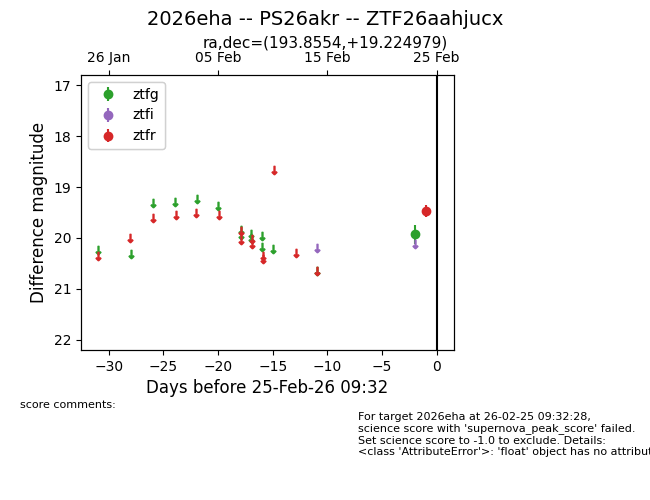
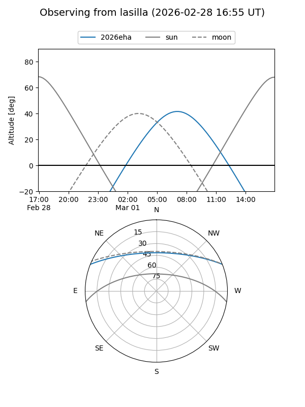
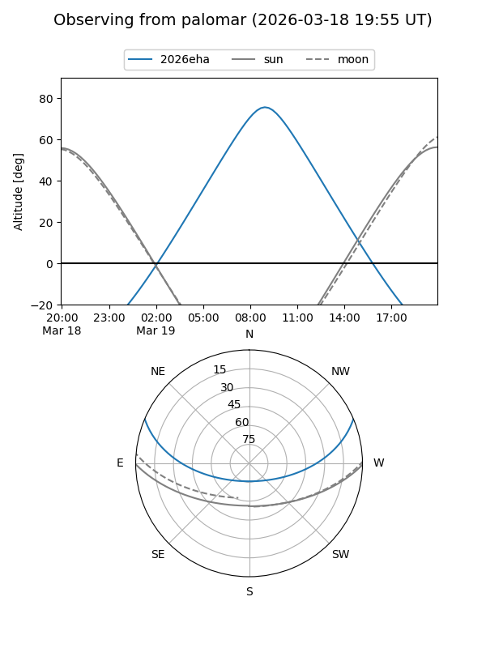
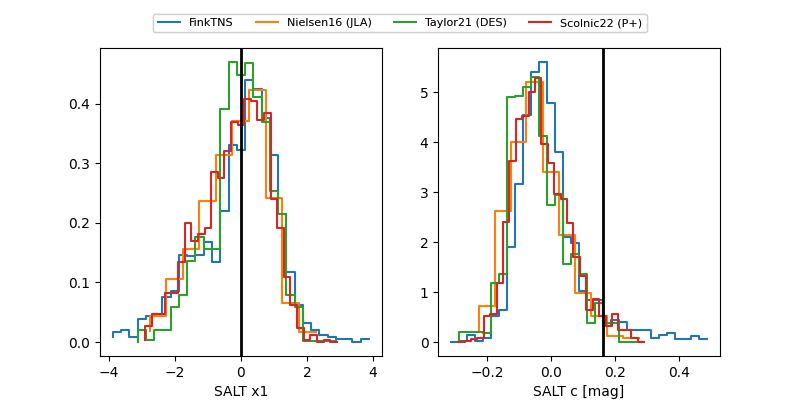

2026eha
Target 2026eha at 2026-02-25 09:33
Aliases and brokers:
FINK: link
Lasair: link
ALeRCE: link
TNS: link
YSE: link
alt names
ZTF26aahjucx (ztf,fink_ztf)
2026eha (tns,yse)
PS26akr (panstarrs)
Coordinates:
equatorial (ra, dec) = 193.8554,+19.22498
equatorial (HMS+DMS) = 12:55:25.29,+19:13:29.93
galactic (l, b) = (309.7416,+82.04400)
Flags:
Photometry:
last ztfg=19.93, ztfr=19.47
1 ztfg, 1 ztfr detections
Lightcurve

Visibility


Additional plots
